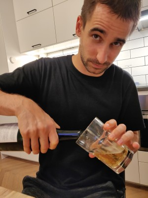

WTF is this page? Give me a break, I'm a hardware engineer.

photo credit: Beatrice Ionascu
One of my favorite things to do is to have good beer and even better conversions with my close friends.
Therefore I am planning to do just that on my birthday.
I am doing a three-stop bar hop on Saturday, October 1st, and I would like you to join me.
The rough plan is as follows:
Place
Address
Time
Comment
Omnipollos kyrka
Sturegatan 41, 172 31 Sundbyberg
arrive at ~18
N/A
Stockholm Brewing Co.
Frihamnsgatan 26A, 115 56 Stockholm
arrive at 20ish
Excellent food. I recommend eating dinner here.
Oliver Twist
Repslagargatan 6, 118 46 Stockholm
arrive around 22ish... or depends how people feel at the previous place
N/A
I hope you join me for the whole evening, but feel free to hop on-off the train whenever you feel like.
The best place to reach me is on Whatsapp, Telegram or Signal. Although that might get progressively harder as the night moves on.
p.s. if you really hate the page you are wellcome to make a pull request here.
FAQ (that nobody actually asked me)
How old is he turning?
31. But why does he behave like 7?
Join my girlfreind's "C'mon, are you 7?!" club. Will there be food?
Yes, by law they are required to serve some kind of food. Or at least that's what people told me... idk, I don't look up stuff.
(but yes... Stockholm Brewing Co. is another level food. I really recommend it.) Are there other drinks besides beer?
Maybe? I never looked past beer. There's water for sure. What should I get you for present?
Nothing, pay for your drinks. They are already expensive enough. (especially in Omnipollos, jeez) But I really need to bring something. (not really a question, I know)
Sure, but keep in mind that I would have to carry it. What is your personal record in javelin throw?
56.38m Why are your eyes closed during your throws?
I wasn't getting a lot of sleep during university days. Are you having fun asking yourself questions in this imaginary q-n-a?
Absolutely!